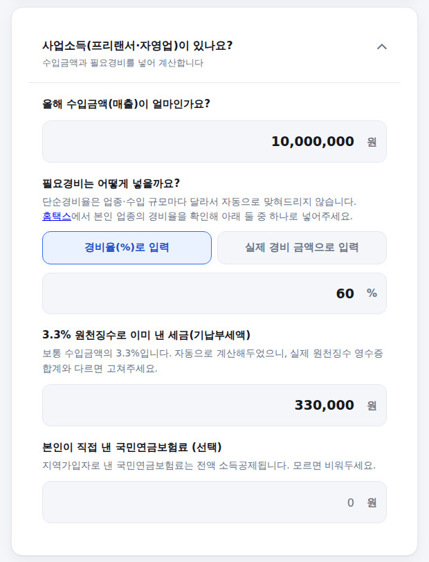
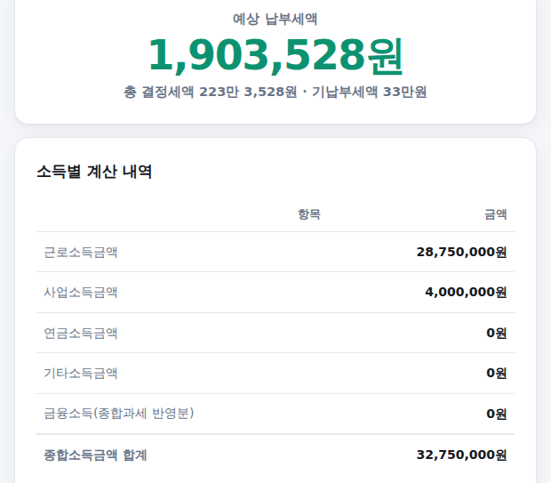

종합소득세는 이름 그대로 이자·배당·사업·근로·연금·기타소득을 전부 합쳐서 계산합니다. 대부분의 계산기는 프리랜서 사업소득 하나만 계산해주는데, 실제로는 겸업이나 투잡으로 여러 소득이 섞여 있는 경우가 많습니다. 해당하는 소득만 골라서 넣으면 전부 합산해 최종 납부·환급세액까지 계산해주는 계산기를 만들었습니다.
-
부양가족 수와 근로소득 입력
부양가족은 본인 포함 숫자입니다. 근로소득(연봉)이 있다면 세전 총급여를 넣고, 없으면 비워두세요. 근로소득 여부에 따라 뒤에서 적용되는 공제·세액공제가 달라집니다.
부양가족·근로소득 입력 화면
-
해당하는 소득만 열어서 입력
사업소득·연금소득·기타소득·금융소득(이자·배당)은 각각 접혀 있는 카드로 되어 있습니다. 해당하는 것만 눌러서 열고 입력하세요. 사업소득은 필요경비를 경비율(%)이나 실제 경비 금액 중 편한 쪽으로 넣을 수 있습니다.

사업소득 입력 화면 (예시)
-
결과 확인 — 소득별 내역과 최종 세액
맨 위에 예상 납부세액(또는 환급세액)이 나오고, 아래 표에서 소득별로 얼마씩 계산됐는지, 소득공제·산출세액·세액공제가 각각 얼마인지 단계별로 확인할 수 있습니다.

결과 화면
단순경비율은 직접 확인해서 넣어야 합니다
업종코드마다 단순경비율이 다르고 매년 바뀌는 데다, 2026년 귀속분 경비율은 2027년 4월에야 고시됩니다. 그래서 이 계산기는 경비율을 자동으로 맞혀주지 않습니다. 홈택스 "기준(단순)경비율 조회"에서 본인 업종코드를 확인해 직접 넣어주세요.
신용카드·의료비 공제는 근로소득이 있을 때만 적용됩니다
신용카드 등 소득공제는 근로소득자만 대상이고, 사업소득만 있는 추계신고자는 원칙적으로 의료비·기부금 세액공제도 받을 수 없습니다. 그래서 이 계산기는 근로소득을 입력했을 때만 이 항목들을 반영합니다.
금융소득 2,000만원, 넘으면 이렇게 계산됩니다
이자+배당이 연 2,000만원을 넘으면 초과분이 다른 소득과 합쳐져 종합과세됩니다. 이때 국내 배당 중 초과분에 해당하는 금액은 11% 배당가산(Gross-up)이 더해지고, 그만큼을 세액공제로 다시 빼줍니다. 계산기는 "종합과세 방식"과 "분리과세 비교 방식" 중 세금이 더 많이 나오는 쪽을 자동으로 골라 적용합니다(비교과세).
계산은 참고용이며 세무 조언이 아닙니다. 성실신고확인대상자, 해외배당 그로스업, 연금소득 분리과세 유불리 비교는 반영하지 않았습니다. 기준: 소득세법(연금·기타소득공제, 금융소득종합과세, 특별세액공제), 2026년 공개 자료 교차검증.